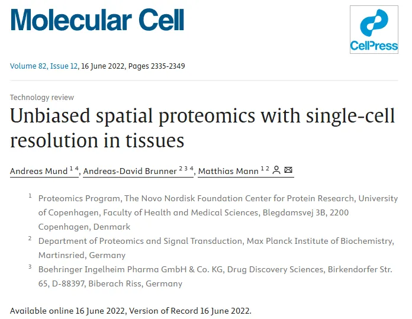
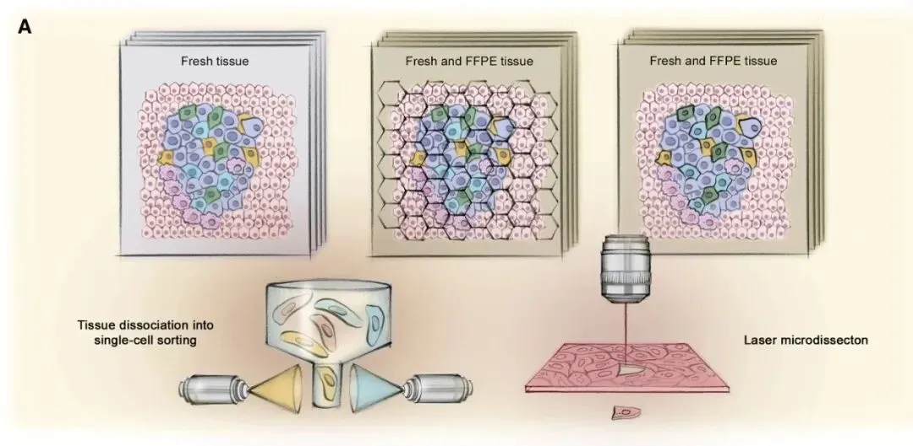
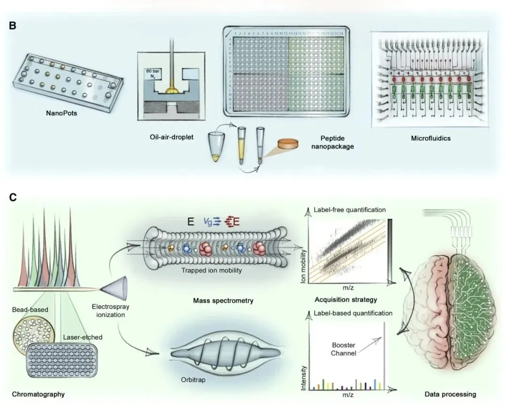
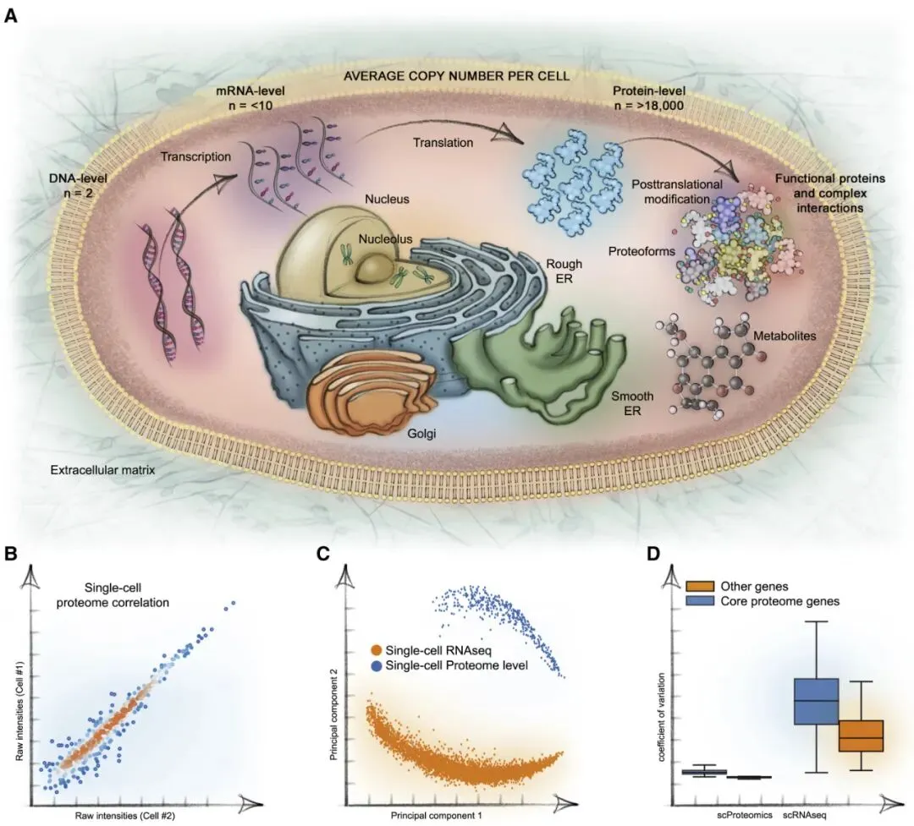
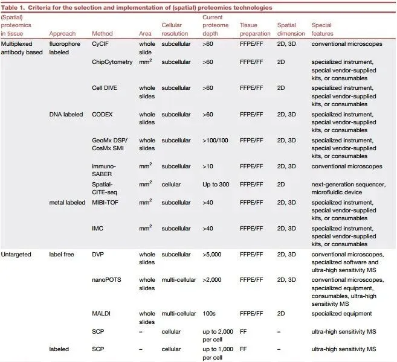
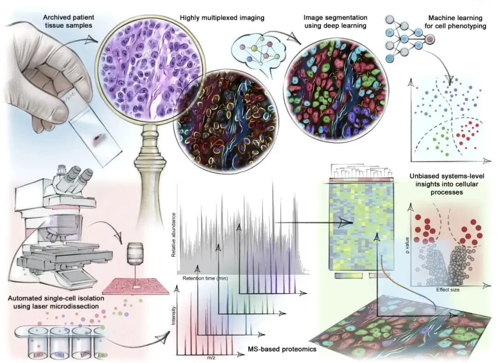
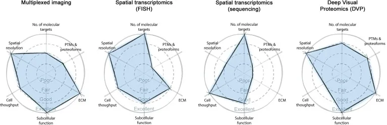
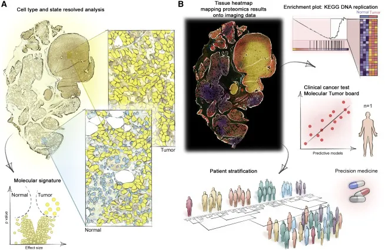

一文了解2024《Nature Method》年度研究方法：空间蛋白质组学
原文：https://mp.weixin.qq.com/s?__biz=MzAwMzIzOTk5OQ==&mid=2247527835&idx=1&sn=ad4c69eccd36d8aa88b17d90bbd1ce0e&chksm=9b3c14cbac4b9dddd4a0fbd95bddd5913bc03c12ceca84c7835c27773c5ce1b1cfc39b11fec7#rd 合集：文献速递
写在前面

空间蛋白质组学是《Nature Method》评选的2024年度方法。空间蛋白质组学是一个总称，涵盖了广泛的基于免疫组织化学的方法和平台，包括但不限于循环免疫荧光 （cycIF）、索引共检测 （CODEX）、迭代漂白扩展多重性 （IBEX）、多重离子束成像 （MIBI） 和成像质谱流式细胞术 （IMC）。这些方法可用于生成标本（如组织和器官切片）的高度多路复用图像，以了解其蛋白质组成和空间组织，是许多全球图谱项目的基础。因此我们今天分享的文献是发表在《Molecular Cell**** 》上的一篇综述，影响因子为17.9 ，题目是**“ Unbiased spatial proteomics with single-cell resolution in tissues”，**基于质谱（MS）的蛋白质组学已成为可用于定量细胞或组织中的全部蛋白质的强大技术 。在此，回顾了基于液相色谱 - 质谱（LC - MS）分析微量蛋白质的挑战和最新进展，微量蛋白质的量可低至单细胞水平 。这项技术的应用展示了单细胞转录组由于每个细胞中的转录本数量极少，容易受到随机噪声影响，而单细胞蛋白质组则似乎较为完整的现象。如今，包括多重成像和空间转录组学在内的新兴技术可用于研究组织中细胞的空间分布，这些技术还可与超灵敏蛋白质组学相结合，例如结合高内涵成像、人工智能和单细胞激光显微切割技术，能够提供一种接近功能水平的无偏倚分子读出。其潜在应用范围从基础生物学问题延伸至精准医疗。如果大家需要数据库搭建、分析指导 、生信热点全文复现 、自测数据个性化分析 辅导，欢迎联系客服微信[Biomamba_yunying]
背景知识
生物体的复杂性是通过其细胞类型和细胞状态的复杂功能和空间适应而产生的。例如，人类有数百种不同的细胞类型，每种细胞类型都可以随着时间的推移以及它们在体内的位置而进一步改变其状态。几个世纪以来，越来越先进的显微镜技术揭示了这种复杂性和异质性。近年来，已通过基因组学、蛋白质组学或代谢组学的手段，即一种系统的、“无目标”的方式 在分子层面对细胞进行了研究。基因组技术的巨大进步，例如RNA测序（RNA - seq），如今已能够对成千上万个单细胞的转录组进行表征，揭示了细胞的异质性。
由于不同形式和修饰状态的蛋白质通常是细胞中的功能单位，因此在单细胞水平上直接研究它们而不是使用转录本作为替代品更加真实直观。以靶向方式，这很容易地通过多种感兴趣蛋白质的抗体来实现，例如通过多重成像或FACS分选。在一种名为CyTOF的基于质谱（MS）的技术中，重金属与这些抗体结合，然后由专门的质谱仪记录金属同位素模式。
自1989年引入电喷雾技术用于蛋白质分析以来，基于质谱（MS）的技术的速度和灵敏度一直在不断提高，如今已能够轻松实现对蛋白质组的深入表征。重要的是在过去的几年里，灵敏度有了显著提升。例如，在作者自己的实验室中，用于在常规的1小时液相色谱 - 质谱（LC - MS）测量中鉴定数千种蛋白质所需的样本量已减少了100倍以上，降至ng级别。
这些进展引起了对于单细胞RNA-seq（scRNA-seq）的深度测量单细胞蛋白质组的探索，理想情况下也是以稳健和可扩展的方式。然而，蛋白质组学既不能等同于寡核苷酸扩增，也不能等同于条形码，从而在scRNA-seq中实现多路复用和高通量。说明这一挑战是，单个细胞仅含有约150 pg的蛋白质物质，其蛋白质组由12000多种不同的蛋白质组成，其丰度还分布在更大的数量级上。
在本综述的第一部分，作者阐述了如何通过将整个样品制备流程小型化，以及大幅提升液相色谱 - 质谱（LC - MS）系统自身的灵敏度，来应对这一挑战。如今，这使得对单细胞蛋白质组和转录组进行直接比较成为可能，而结果表明，二者在一些意想不到的方面存在显著差异。单细胞转录组通常要求细胞在分析前处于悬浮状态，或者从组织中解离出来，这样一来，每个单细胞至关重要的空间背景信息就丢失了。(Fig.1A)

Fig.1
在综述的第二部分，作者描述了如何通过多路成像整合这一重要信息，即空间转录组学或空间蛋白质组学。还引入了一个“深度可视化蛋白质组学（DVP）” 的概念，它将多重成像的优势与对单细胞类型或状态的深度蛋白质组分析相结合。通过将数字病理学与分子分析相结合，这些方法必将对精准医学产生变革性影响。
主要内容
1. 单细胞超灵敏质谱分析
有许多不同的样品制备技术可用于处理低细胞数量直至单细胞水平的样本。 这些技术的总体目标是在无细胞损失的情况下收集细胞，将样品裂解、蛋白质提取以及消化为适用于质谱分析的肽段等流程进行微型化处理 ，所有这些操作旨在将样品损失降至最低，并使消化动力学达到最佳（Fig.1B）。在超高灵敏度蛋白质组学研究中得到的一个重要经验是对真实样本（而非稀释后的标准品）进行分析时，即使是工作流程中极其细微的缺陷也会暴露出来，而这些缺陷在批量分析中往往会被掩盖。此外，在高度优化的概念验证实验环境中可行的方法，可能并不适用于高通量的常规操作。

Fig.1
样品制备的第一步是分离出的细胞需要被消化成肽段。 有一种具有开创性的单细胞样品制备方法称为 “微量样品一锅法纳升级液滴处理技术（nanoPOTS）”。在nanoPOTS技术中，所有样品处理步骤均在200纳升的液滴中进行，通过机器人将液滴点在载玻片上，并置于湿度可控的小室中以防止蒸发。类似地，在 “油 - 气液滴（OAD）” 方法中，样品被置于OAD芯片上的纳米级液滴中，并用油覆盖，同样是为了防止蒸发。蛋白质组学研究人员还采用了在单细胞RNA测序（scRNA - seq）中广泛应用的微流控方法。这些方法有望在封闭系统中实现并行处理，且样品用量极少。循着这些思路，cellenONE仪器将通过声学分配进行的单细胞操作与专门的下游收集相结合，其方式与进一步的蛋白质组学处理兼容。
这些方法中的许多都存在一个局限性，即它们使用非常专用和特殊的设备，而这些设备对于研究群体来说未必易于使用。此外，由于缺少后续的清洗步骤，需要在与电喷雾兼容的缓冲液中进行酶消化，而不是使用具有消化增强修饰剂的缓冲液。相比之下，单细胞可以在标准的低吸附384孔板中高效处理。在此，反应室可通过流式细胞术（FACS）或激光捕获显微切割（LCM）以标准化的方式收集细胞，并且样品可在标准的PCR热循环仪中以微升或亚微升的体积进行处理。
在样品制备完成后，消化得到的肽段需要无损失地转移到色谱柱上。一根含有色谱材料的毛细管可以被动地提取肽段，之后该毛细管可与分析柱连接。对于一种更具标准化且几乎无损失的方法，作者发现来自384孔板的消化混合物可转移至商业的StageTips上，该StageTips通常在色谱分析前用于样品净化。一个关键优势在于，肽段会被浓缩在仅20纳升的“纳米包裹体”中，随后该包裹体被洗脱到分析柱上，而污染物则留在StageTips上。这种方法还允许在低乙腈浓度下进行高效消化，这可改善消化动力学。
众所周知，电喷雾的灵敏度会随着色谱流速的降低而增加，而这反过来又有利于使用非常窄的色谱柱。标准的基于质谱的蛋白质组学使用内径为75毫米的色谱柱，流速为每分钟几百纳升，而专用的超灵敏装置使用的色谱柱仅宽20毫米，流速在低纳升/分钟范围。尽管它们通常能实现高得多的灵敏度，但肽段分离能力通常会受到影响，而且难以以可重复和流畅的方式进行制造。最近推出的mPAC色谱柱可能是一个颇具吸引力的替代选择，因为它们利用光刻蚀刻的微柱以规则阵列排列，而不是采用高压填充的柱材料。最初的报告已经表明其具有出色的灵敏度，并且这种形式可以通过制造横截面积较小的色谱柱而轻松应用于极低的流速。
从色谱柱洗脱后，肽段通过电喷雾转移至气相，这涉及到在环境压力下小的、高电荷的液滴蒸发，从而使所含的分析物分子离子化（Fig.1C）。通常，在每个时间点洗脱的总离子群体中只有一小部分能够进入气相并最终进入质谱仪的入口孔。完全封闭的环境，如捕获喷雾技术，部分解决了这一挑战，其通过提高去溶剂化效率来实现，在液相色谱系统的溶剂中添加少量如二甲基亚砜（DMSO）之类的化学物质也能达到此效果。然而，对更高灵敏度的最大贡献在于增大允许离子进入质谱仪的入口孔的直径，这直接提高了可用于分析的信号。最终，有可能实现直接向真空中进行电喷雾，从而完全消除转移过程中的损失。一旦进入质谱仪，离子会被非常高效地引导，直至它们被实际地进行质量分析、裂解和定量，对此存在多种创新策略和扫描模式。
单细胞蛋白质组学的首批方法之一是“基于质谱的单细胞蛋白质组学（SCoPE-MS）”， 该方法将许多细胞用广泛使用的串联质量标签（TMT）试剂标记后进行多重化分析。SCoPE-MS的关键特征是引入了一个“增强通道”，该通道最初由相当于数百个细胞的物质组成，对其进行单独标记并混入样本中。对于大多数质谱分析方面而言，这将所需的灵敏度降低了10至100倍 ，因为绝大部分信号来自增强通道。这种方法在轨道阱分析仪上开创先河，该分析仪能够解析具有极小报告离子质量差异的多重化样本。肽段裂解相对简单，可实现每个单细胞鉴定出数百种蛋白质，总共多达数千种。然而，这些单细胞蛋白质组的定量会因它们的通道与占主导地位的增强通道之间的同位素串扰而变得复杂。另外，TMT有大量的量化的问题。随着质谱工作流程的灵敏度大幅提高，现在可以通过将增强通道减少至不超过25个细胞或完全去除该通道来缓解大部分这些问题。此外，基于前体的报告离子（而不是低分子量报告离子）将进一步提高定量准确性。
作为同位素多重方法的替代方案，无标记的“真单细胞”方法在质谱仪中一次分析一个细胞，因此蛋白质的鉴定和定量仅基于来自该单细胞的肽信号。同时这需要使用非常高效的扫描模式。数据依赖性采集（DDA）已被用于许多概念验证单细胞研究，其中肽根据其MS1强度进行定量。根据细胞类型，每个细胞可以鉴定出1000多种蛋白质。然而，DDA只将一小部分进入的肽离子转化为片段，并不总是选择相同的片段进行片段化，导致许多单个细胞的数据完整性相对较低。而数据独立采集（DIA）本身具有较高的数据完整性，这使得这种扫描模式对单细胞蛋白质组学具有吸引力。通常，DIA只将百分之几的肽离子转化为片段，而鉴定和定量是基于这些片段。利用“捕获离子迁移率”飞行时间仪器（timsTOF）中离子迁移率和质荷比（m/z）的相关性，描述了一种称为diaPASEF的扫描模式，该模式将大部分肽离子电流转化为可量化的片段。这导致每个单细胞多达2000种蛋白质的定量，数据完整性很高。通过机器学习（ML），特别是深度学习（DL）改进的单细胞光谱软件分析也提供了重大推动，目前是一个非常活跃的研究领域。人工智能（AI）现在协助基于MS的蛋白质组学分析，仅从序列中预测每个已鉴定肽的预期测量点。此外，一旦临床研究完成，人工智能是从数据中提取候选生物标志物的首选方法。
为“真正的单细胞”蛋白质组学开发的许多方法也将改进同位素多重方法。尽管DIA采集通常与基于TMT的定量不兼容，这是由于来自许多前体的片段离子混合在一起，但通过使用前体编码或前体偶联的报告离子以及复杂的算法来解卷积数据，“多重DIA”成为可能。
** **
2. 单细胞转录组学与蛋白质组学
经典的基因表达级联反应起始于将基因组蓝图转录为信使核糖核酸（mRNAs），随后这些 mRNAs 被翻译成蛋白质，而蛋白质是细胞生命的主要执行者和调节者。人类基因组中大约20,000个蛋白质编码基因会产生大量不同的活性 RNA 分子，进而产生数十万种“蛋白质变体”，包括那些经过翻译后修饰（PTMs）且能动态调节蛋白质功能的变体。蛋白质组的这种高度复杂性伴随着非常大的动态范围，其中一些结构蛋白的表达量比低丰度的调节蛋白高出百万倍。

Fig.2
尽管“中心法则”（DNA制造mRNA，mRNA制造蛋白质）在原则上看起来很简单，但实际上有许多极其复杂的控制点。这里特别感兴趣的是mRNAs与其同源蛋白之间的翻译，这是高度调节和非线性的。这反映在许多实验中观察到的转录组和蛋白质组之间的相关性相对较低（皮尔逊相关系数通常在0.3-0.6的范围内） 。稳态水平就是这种情况，扰动后基因表达变化的相关性更为明显，甚至在特定时间点，例如肿瘤进展期间，基因表达变化甚至可能呈反相关(Fig.2A)。
在单细胞蛋白质组学中，这一过程始于获取单个细胞。在这一方面，研究人员可以借鉴单细胞转录组分析的丰富经验。寡核苷酸测序技术已经取得了巨大的进步，现在能够对基因组和转录组进行常规分析和全面覆盖。单细胞 RNA 测序（scRNA - seq）已成为常规且高通量的技术，它使用条形码标记细胞中的所有单个 RNA 分子并对其中大部分进行定量。到目前为止，这些研究中的大多数使用悬浮细胞或通过组织离散化并随后将细胞分选到单个孔中的新鲜组织细胞。例如，基于液滴的单细胞方法每秒可分选多达 15,000 个，并且最近甚至已与多参数图像引导的细胞分选相结合。
尽管如此，即使是最新的单细胞 RNA 测序技术，其对每个细胞的状况获取仍存在较高的缺失率。这大概是由于给定细胞中每个活性基因的转录本数量非常少。即使在正在分裂的细胞中，表达基因的平均转录本数量也少于十个，而对于处于非分裂状态的组织细胞中的大多数基因，其拷贝数甚至少于一个。这会导致每个基因和每个细胞的转录本数量出现高的随机波动（被称为泊松噪声或散粒噪声），并引发了一些问题，例如需要多少信使 RNA 拷贝数才能影响生物学功能，以及细胞如何通过诸如转录爆发等方式来稳健地调节基因表达。在整体蛋白质组水平上，作者和其他研究者观察到，与相应的信使 RNA 相比，蛋白质的拷贝数通常至少存在100倍的差异，远高于泊松噪声的水平。这是因为每个单细胞都需要全套的蛋白质和功能性蛋白质变体来执行其众多功能，而大多数转录本可能仅在特定情况下才是必需的。
在最近的一项研究中，作者已经使用上述的单细胞蛋白质组学技术通过实验探究了这些问题。对一种癌细胞系进行药物扰动，以便在单细胞水平上描绘不同的细胞周期阶段，并将结果与等效的单细胞 RNA 测序数据进行比较。单细胞蛋白质组彼此之间高度相关，并且在整个细胞周期中发生显著变化的蛋白质在该过程中要么是已知的参与者，要么可能是新的参与者 (Fig.2B)。有趣的是，根据细胞的转录组和蛋白质组，细胞的聚类情况大不相同，这支持了不同调节模式的观点 (Fig.2C)。令人惊讶的是，与同源信使 RNA 相比，蛋白质的变异系数要低得多 (Fig.2D)。作者将这种现象归因于上述转录本相对于蛋白质表达的随机性，而不是技术差异。 随后进一步将“核心蛋白质组”定义为在整个细胞周期中数据完整性最高且变化最少的蛋白质 。核心蛋白质组的变异性甚至比其转录本的变异性低得多(在蛋白质组学中变异系数的中位数为 0.2，而在 Dropseq 中相应转录本的变异系数为 1.3,Fig.2D)。但是，目前质谱的灵敏度在单细胞水平上仍然有限（在该实验中最多可对 2000 种不同的蛋白质进行定量）。一般而言，基于深度测序的技术的通量和全面性比蛋白质组学高得多，而且它们也越来越多地融入空间方面的信息。因此，作者认为在许多情况下将这两种方法结合起来将是有益的。这可以在蛋白质水平上验证转录组学或基因组学的结果。
** **
3. 单细胞分辨率的空间组织蛋白质组学
上述所描述的组织解离要求会丧失对于正常和病变组织之间细胞间相互作用至关重要的空间背景信息。然而，这种背景信息对于充分理解细胞功能、细胞间的相互关系以及它们对异质组织的贡献是至关重要的。空间转录组学——2020年的年度方法——通过高度多重的荧光原位杂交（FISH）或基于测序的方法解决了这一挑战。在后一种情况下，通常会指定尺寸为 10-100 微米的组织区域以有效捕获信使 RNA（mRNA），单细胞贡献是通过对单细胞文库进行解卷积来推断的。
与蛋白质不同，RNA 易于降解，并且在福尔马林固定和石蜡包埋（FFPE）的样本中容易与其他生物分子发生交联，尽管这些挑战在一定程度上可以被克服。更普遍的情况是，在空间转录组学中，细胞类型并非直接可见，而必须从数据中推断出来。如前所述，RNA 表达并不直接预测蛋白质表达。理想情况下，上述方法应该通过对蛋白质组的直接测量加以补充，因为这将更准确地反映特定的细胞功能和状态。
可以使用免疫组织化学（IHC）、免疫荧光（IF）、质谱（MS）和流式细胞术在组织、细胞甚至亚细胞水平上分析空间分辨的蛋白质分布或整个蛋白质组。这些方法在空间信息、覆盖深度、分子或细胞通量以及数据获取时间 之间进行了权衡，并且总体上可以根据是否使用抗体（或其他特异性结合剂）进行分类。蛋白质图谱项目中的数千张组织 IHC 图像为从蛋白质水平上了解组织的空间（亚）细胞组织和组成提供了前所未有的见解。基于抗体的多重成像方法因抗体标记的原理（如金属标签、荧光团、DNA 寡核苷酸条形码或酶）和检测方式（如质谱、光谱学、荧光或显色方法）而有所不同。 例如，成像质谱流式技术（IMC）现在允许在福尔马林固定石蜡包埋（FFPE）样本中以单细胞分辨率在其三维环境下检测 40 种抗原和核酸序列。基于抗体的多重成像通常通过少数几种蛋白质的表达来定义细胞类型，但新的方法可以在同一组织切片中检测多达一百个靶点 （Table.1）。

Table.1
作为基于抗体方法的一种替代方案，组织可以通过光或粒子束进行扫描，使一些表面生物分子电离，从而可使用飞行时间（TOF）质谱对其进行分析。在基质辅助激光解吸/电离（MALDI）技术中，脉冲激光束主要将小分子生物分子和肽段离子化，具有近单细胞分辨率（10-50 微米）。第一步，表面蛋白质在原位被消化，以产生蛋白质组的肽段表征。 该技术最近已被应用于各种疾病状态，包括癌症，以发现诊断、预测和生存标志物。虽然激光光斑或许可以聚焦以实现 MALDI 的单细胞分辨率，但在载玻片上把蛋白质消化为肽段可能会导致分析物的离域化。此外，MALDI 通常在定量性和动态范围方面不如电喷雾，这导致它在蛋白质组学中的地位下降。然而，MALDI 在诸如研究药物在组织和肿瘤中的分布等应用中发挥着作用，并且它可以与稳定同位素标记的营养物输注（同位素成像）相结合，以揭示组织中代谢活性的空间组织。而且，MALDI 是用于分析单细胞代谢组的一种很有前景的技术，其目的是尽可能多地对小分子（代谢物、脂质等）的全貌进行表征。例如，一种名为 SpaceM 的方法将光学显微镜与 MALDI 成像相结合，为每个细胞提供原位代谢谱。 SpaceM 每小时可从 1000 多个共培养的人类上皮细胞和小鼠成纤维细胞中检测出 100 多种代谢物和脂质，展现出高灵敏度和速度。作者预计，在未来几年中，样品制备和质谱设备方面的技术进步将能够实现对代谢活性更广泛和高空间分辨率的分析。
二次离子质谱（SIMS）是一种成熟的技术，例如可用于研究半导体表面。纳米二次离子质谱（NanoSIMS）具有几十纳米的高空间分辨率。NanoSIMS 已被用于可视化亚细胞结构，但它局限于非常小的分子。
对于基于液相色谱 - 质谱（LC - MS）的蛋白质组学，大块组织更加容易分析，现在单次液相色谱运行中可以鉴定和定量超过 10,000 种蛋白质，在进行初步分级分离后甚至能鉴定和定量更多的蛋白质。然而，任何组织匀浆过程都会不可避免地通过模糊空间和细胞类型信息而产生平均效应。 在激光捕获显微切割（LCM）中，利用直接显微镜观察将感兴趣的组织区域切除，以将位置细胞信息与遗传、转录组或蛋白质组信息联系起来(Fig.1A)。作为转录组学的一个例子，LCM 和 Smart - seq2（LCM - seq）的组合已被证明可成功用于单细胞神经元的转录组分析。
福尔马林固定石蜡包埋（FFPE）组织样本是病理学组织存储和分析的金标准，生物样本库中存储着数亿个组织块(Fig.1A)。因此，可以分析 FFPE 材料使得任何空间组学技术在临床问题上更具适用性。最初人们担心蛋白质可能会发生大量化学修饰，或者它们可能无法提取和消化，从而妨碍通过质谱进行蛋白质组分析，但事实证明这种担忧是没有根据的。相反，与新鲜冷冻组织相比，FFPE 已被证明是一种理想的蛋白质组长期存储介质，对所测蛋白质丰度的影响极小。重要的是，在这些组织块中，翻译后修饰（PTMs）在几十年内 也能得到完美保存。
高效的实验方案使得对大块或激光显微切割的福尔马林固定石蜡包埋（FFPE）组织的流畅分析成为可能，从而对肿瘤异质性有了深入理解，并发现了卵巢癌化疗后长期生存的一种新型生物标志物。值得注意的是，即使是几十年前的 FFPE 材料也可被分析，并且在细胞外基质的蛋白质中也发现了功能性生物标志物。上述提到的 nanoPOTS 方法能够对来自新鲜组织的分辨率为 100 微米的网格元素进行分析，可鉴定出多达 2000 种蛋白质。尽管组织在其空间背景下的分子信息得以保留，但网格分析无法达到单细胞分辨率，因此会产生细胞类型和状态，或细胞与细胞外基质的合并数据。
为了更深入地洞察组织生物学，将基于抗体的生物成像与蛋白质组的无偏表征相结合，从而将视觉维度直接与分子表型联系起来；进而整合单细胞和空间分辨的分子数据。为此，作者开发了一个新概念，将其称为 DVP (Fig.3A)。DVP 将人工智能驱动的基于图像的分割和细胞表型分析分类与基于超高灵敏度质谱的蛋白质组学相结合。具有亚细胞分辨率的高内涵成像为在一个空间区域内识别统计上和分析上稳健的细胞表型提供了所需的细胞数量，以便精确地分离细胞类型和状态。因此，DVP 以一种无偏且全系统的方式将定义细胞身份和异质性的视觉信息与细胞邻域和潜在的蛋白质组特征联系在一起。

Fig.3
空间信息、通量和覆盖深度之间内在的权衡决定了研究人员为最有效地回答实验问题而需要做出的方法学选择。因此，最终的数据要求、可用的样本和格式以及现有的基础设施应该指导多重成像方法的选择(Table.1，Fig.3)。将基于抗体的生物成像与蛋白质组的无偏表征相结合以进行系统水平的细胞表型分析。深度视觉蛋白质组学（DVP）将生物样本库组织的高参数成像与基于机器学习的细胞分割和细胞表型分类相连接。利用自动激光显微切割将感兴趣的细胞或亚细胞结构切下，并对其进行基于超灵敏质谱的蛋白质组分析。接下来，生物信息学数据分析会发现蛋白质特征，这些特征能在单细胞水平为蛋白质组变异提供分子层面的见解。同样，创建多重成像面板的首要且关键的步骤是确定需要解决的科学问题。
作者预计在未来几年内将看到蛋白质组覆盖度增加至数千种蛋白质，以及细胞通量达到数百个。将单细胞转录组和蛋白质组进行比较以查明差异将是一件有趣的事情，例如在涉及蛋白质降解的动态过程中的差异。与离散化的细胞相比，对直接取自组织的细胞进行蛋白质组学分析更具挑战性。然而，在分析中细胞类型的分辨至关重要，因为这会带来整体分析的所带来的问题。在这方面，深度视觉蛋白质组学（DVP）可发挥作用，因为它会根据成像数据预先确定细胞类型和细胞状态。 这避免了混合效应，同时允许一次性分析具有统计意义数量的细胞，这也解决了通量不足问题并提供了出色的蛋白质组覆盖深度。
4. 单细胞分辨率组织蛋白质组学的临床应用
在临床或转化应用中，上述的空间蛋白质组学方法与病理学天然契合。几十年来，病理学家一直通过显微镜观察手术标本的染色切片，以达到诊断目的，为临床医生提供预后信息并探索新的治疗方法。如今，组织切片中蕴含的丰富分子信息可通过数字病理学来提取。手动检查显微镜的狭窄视野已被更广泛、更多样化和更精确的数字全切片成像（WSI）所取代，这开启了全新的机遇。数字病理学的一个核心要素是使用机器学习（ML）方法对图像进行自动化分析。通过模拟人类的能力，这有望实现更好、更快的数据提取。这些技术需要根据人类标注的特征对算法进行训练，这是一项相当复杂的任务。深度学习（DL）有助于克服这个问题，目的是实现包括特征提取在内的端到端可训练系统。在数字病理学中，这些算法允许发现有意义的特征，同时在与强度或形态相关的信号异质性方面实现更好的稳健性。
在基于蛋白质的多重图像分析的背景下，人们想要检索复杂的信息，例如单细胞相互作用、生物标志物的表达或肿瘤内的免疫细胞浸润。在肿瘤学中，临床目标是确定单个肿瘤细胞、免疫细胞、血管、成纤维细胞和细胞外基质之间的相互作用。以对这种肿瘤微环境进行研究，包括免疫细胞的类型、密度、定位和组织（被定义为免疫结构），有助于在个体基础上进行预测治疗。因此，数字病理学旨在检测肿瘤并将它们分类为不同亚型，这涉及图像分割、细胞检测和计数、肿瘤分级等。对于具有复杂细胞形态的组织进行特征提取，现在可以实现达到组织分割性能。下一步，计算方法可以计算组织细胞间的空间特征和关系，以及某些免疫细胞在组织微环境或实质中的出现频率。这些空间特征能够帮助找到可能预测治疗反应的数字生物标志物，其本身可以作为预后标志物，甚至可以预测患者的基因组突变。
举一个说明性的例子，最近在一项荟萃分析中评估了一种基于蛋白质的空间表型分析方法，该方法使用多重免疫荧光（mIF），以确定这种方法相较于程序性死亡配体1（PD-L1）免疫组织化学（IHC）、肿瘤突变负荷（TMB）和基因表达谱分析（GEP），是否能提高诊断性能。作者从45份报告中得出结论，就特异性和敏感性而言，多模态生物标志物和mIF策略确实优于单独使用PD-L1 、IHC、TMB或GEP。
癌症是一种与蛋白质失调和环境因素有关的遗传性和多因素疾病。因此，获取空间多组学图谱或许能够以一种整体的方式重建肿瘤发生的关键过程。例如，一种名为空间-CITE-seq（转录组和表位的空间共索引）的新技术将下一代测序与基于抗体的组织条形码技术相结合，用于绘制约300种蛋白质和整个转录组的图谱。另一个例子是空间 - CUT&Tag，它将微流体确定性条形码技术、下一代测序和成像技术相结合，用于对冷冻组织中的单细胞表观基因组图谱进行空间解析。如前文所述，深度视觉蛋白质组学（DVP）将高内涵和高分辨率成像与无偏的、深度蛋白质组学相结合，直接从它们的原生组织环境中比较和对照纯细胞类型和状态(Fig.4A)。在精准肿瘤学的背景下，这可以追踪并从功能上描述单个组织切片。反过来，这使得在二维组织切片中能够可视化癌症进展过程中失调的关键通路(Fig.4B)。未来的发展将把这一技术扩展到对连续切片的分析，从而能够在三维空间中重建富集的关键通路。

Fig.4
总结讨论
生物学和病理学现象总是在特定的空间环境中发生。正如前文在此所阐述的，组学技术如今正借助庞大、多样且迅速发展的方法体系，来探索空间维度的奥秘。在未来几年里，对组织内细胞进行空间层面、高分辨率以及分子层面的分析，将成为生物学研究的重要前沿领域之一。由于组织中细胞构成极为复杂，没有任何一种单一技术能够解答所有问题。虽然基因组学已经相当成熟，但作者已阐述了基于质谱（MS）的蛋白质组学在表征组织中的单细胞、单细胞类型或状态的能力方面，如何正迎来一个转折点。这一意外进展源于上述基于液相色谱 - 质谱（LC-MS）工作流程不同环节的多项突破。还有许多进一步提高整体灵敏度的技术进步即将出现，包括更强大的离子源、改进的色谱法以及更智能的数据分析和建模工具。与单细胞RNA测序领域近期的快速进展类似，这将进一步拓展基于LC-MS的单细胞和空间蛋白质组学的众多潜在应用。由于蛋白质是最能直接反映细胞功能的物质，这将为单细胞生物学增添一个重要维度。尽管蛋白质组学在技术上尚欠成熟，但它具有一个优势，即可以很容易地从诸如福尔马林固定石蜡包埋（FFPE）切片等组织材料中提取蛋白质，而FFPE切片是病理学研究的常用样本。随着基于质谱的蛋白质组学工作流程的进一步发展，它应在病理学中占据重要地位。病理学本身已在向数字病理学转变，部分得益于深度学习的快速发展。虽然对病理切片进行数字分类本身就十分强大，但作者认为，当它与无偏见的深度分子表征相结合时，才能真正发挥其作用。除了空间转录组学，这可以通过激光捕获显微切割（LCM）后进行蛋白质组学分析来实现。以前，这需要对大量细胞进行繁琐的界定和切割，而现在借助最先进的成像技术、人工智能、自动化单细胞分离以及使用深度视觉蛋白质组学（DVP）技术的超灵敏蛋白质组学，就可以达成这一目标。显而易见的下一步是将这些技术扩展到三维空间，通过堆叠和关联许多组织切片的结果，创建一个真正的三维多组学图谱。除了基因组学和基于MS的霰弹枪蛋白质组学，还可以解决更多具有空间维度的模式。这甚至延伸到原位测定蛋白质复合物的结构及其在细胞内的定位。所有这些技术自身都会生成极为庞大的数据集，分析和解读这些数据颇具挑战性。而当多种组学技术结合使用时（这种情况越来越常见），难度更是成倍增加。因此，在算法开发、数据分析以及数据集联合建模方面所面临的挑战与机遇，丝毫不亚于最初获取数据时的难度。所幸的是，这一领域正快速发展，似乎有望应对这些挑战。基于组织的空间方法分为四类，可以根据六个不同的标准进行比较(Fig.5) 深度视觉蛋白质组学（DVP）是一种通用流程，可用于研究任何类型的健康或患病组织样本。对于健康组织样本，它有助于构建细胞类型特异性细胞图谱，或描绘发育轨迹。期望与病理学家和临床医生建立紧密合作关系，开创一个新局面：未来癌症活检将常规采用下一代显微镜技术进行成像，通过人工智能驱动，实现对受影响细胞的识别与分类，随后对其基因组和蛋白质组进行深入表征。 深度视觉蛋白质组学（DVP）在癌症患者初诊时就能发挥其重要的实际应用价值，而在患者复发后决定最佳治疗方案时，其作用更为关键。除了这一主要应用领域，空间蛋白质组学同样可用于研究众多器官的各类病症，如脑部、肝脏、皮肤等器官的疾病。这些方法需要在临床日常工作中以可靠且经济实惠的方式发挥作用，而这反过来又需要大量的技术开发和标准化工作。然而，一旦实现所需的通量、可靠性和成本效益，许多患者将受益于具有单细胞分辨率的无偏空间组学和蛋白质组学，这是科研界值得为之奋斗的目标。多重成像的一个关键优势在于，它能够在空间背景下对大量细胞进行分类。甚至亚细胞和细胞外结构也很容易被观察到。相比之下，其分子层面的深度有限，只能检测相对少量的蛋白质，而且必须有针对这些蛋白质的特异性抗体。抗体组合的设计也可能引入偏差。基于荧光原位杂交（FISH）的空间转录组学方法具有出色的分辨率，能够记录细胞中单个mRNA种类的位置信息，并通过多轮连续杂交在原位对数百到数千个单个RNA分子进行成像。基于测序的空间转录组学虽然具有高通量和深度，但代价是无法实现精确的单细胞空间分辨率。此外，由于它不考虑细胞边界，因此结果需要进行解卷积处理。如前文所述，目前的发展趋势是将分辨率提高到亚微米级别。空间转录组学检测的是分子功能的替代指标，因此，转录本的位置在功能信息方面不如蛋白质的位置丰富。相比之下，基于空间质谱的蛋白质组学的一个关键优势在于它是无偏向性的，也就是说无需事先确定要研究的分子靶点。此外，福尔马林固定石蜡包埋（FFPE）的临床样本很容易用于该研究，因为来自各种来源的蛋白质都能得到保存且易于分析。目前，该方法的通量相对较低，单细胞分析仍然极具挑战性。然而，深度视觉蛋白质组学（DVP）方法在前端有效地利用高内涵成像来识别细胞群体，从而大大降低了后端质谱分析的要求。重要的是，一起分析的细胞应该已经属于相同的类型和状态。

Fig.5

如何联系我们

 公众号后台消息回复不便，这里给大家留一下领取资料及免费服务器(足够支持你完成硕博生涯的生信环境)的微信号 ，方便各位随时交流（别问在么，添加时直接说来意）。呼声很高的交流群 也建好了，欢迎大家入群讨论：
公众号后台消息回复不便，这里给大家留一下领取资料及免费服务器(足够支持你完成硕博生涯的生信环境)的微信号 ，方便各位随时交流（别问在么，添加时直接说来意）。呼声很高的交流群 也建好了，欢迎大家入群讨论：
大家可以阅读完这几篇之后添加给生信入门初学者的小贴士 如何搜索公众号过往发布内容
已有生信基地联系方式的同学无需重复添加

 您点的每个赞和在看，我都认真当成了喜欢
您点的每个赞和在看，我都认真当成了喜欢